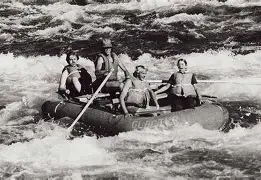

At Edo Rapids Adventure, we turn Nigerias mighty waters into unforgettable memories. Our team is passionate about safety, nature, and unforgettable river thrills!

White Water Rafting
History
Founded in 2020 near the Ovia River in Edo State, our company began with a mission to introduce locals and tourists to the raw beauty of Nigeria's rapids.
What started as a hobby among friends has grown into the region’s leading white water rafting experience, built on safety, adventure, and community love.
Adventure Awaits You!